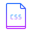

Cafe de Felica
3枚の画像にbsSliderを実装。
お知らせのテキストは外部ファイル化し、更新しても常に最新の3件だけを表示。



Ristorante Felica
AOSプラグインを実装し、3枚の画像とテキストを左右から時間差で表示。
youtube動画とgoogle mapを埋め込み、お知らせは外部ファイル化。

おみくじ
ランダム変数Math.ceil、Math.randomを使用し、getElementByIdメソッドで7種類の画像からランダムに取得。


onClick
OnClick属性を使用し、モノクロ画像クリックするとカラー画像に変化。

onMouseOver
onMouseOver属性を使用。
マウスをクリックすると小さい画像が大きな画像に変化。

縦書きの練習
縦書きにするためにCSSのwriting-modeをvertical-rlにし、HTMLにruby要素でルビを付加。